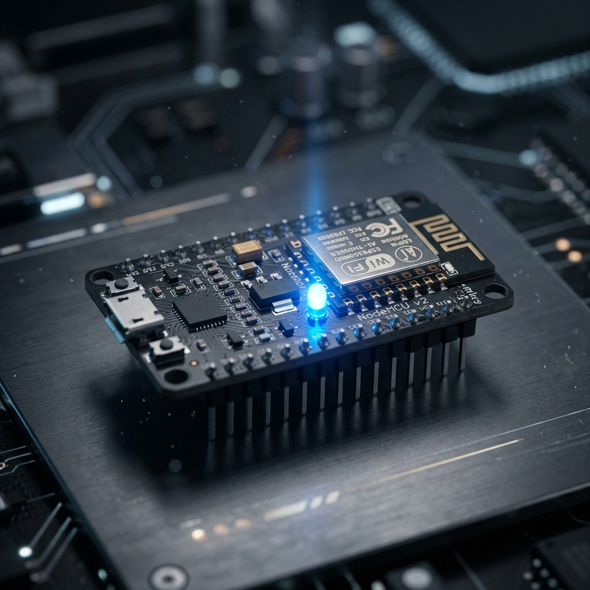

Aprendé a controlar el mundo físico desde tu navegador. Guía paso a paso para domótica básica.
Antes de comenzar, debemos identificar en qué puerto está conectada nuestra placa y borrar cualquier configuración previa.
ls /dev/tty* | grep -E "USB|ACM"esptool --port /dev/ttyUSB0 erase_flashDescargamos la última versión estable de MicroPython para el ESP8266 y la grabamos en el controlador.
# Descargar firmware
wget https://micropython.org/resources/firmware/ESP8266_GENERIC-20240602-v1.23.0.bin
# Grabar en el ESP8266
esptool --port /dev/ttyUSB0 --chip esp8266 write-flash --flash_mode dio --flash_size 4MB 0x0 ESP8266_GENERIC-20240602-v1.23.0.binEl ESP8266 requiere dos archivos principales: boot.py para la configuración de red y main.py para el servidor web.
import network
import gc
ap = network.WLAN(network.AP_IF)
ap.active(True)
ap.config(essid='Robotica-ESP', password='password123')
print('Red AP Activa. IP:', ap.ifconfig()[0])
gc.collect()import machine
import usocket as socket
led = machine.Pin(2, machine.Pin.OUT)
led.value(1) # Apagado (lógica inversa)
def web_page():
return """<!DOCTYPE html><html>...</html>"""
s = socket.socket()
s.bind(('', 80))
s.listen(5)
while True:
conn, addr = s.accept()
request = conn.recv(1024).decode('utf-8')
if '/toggle' in request:
led.value(not led.value())
# ... enviar respuesta ...Subimos los archivos y reiniciamos la placa para activar el servidor.
mpremote cp boot.py :
mpremote cp main.py :
mpremote reset